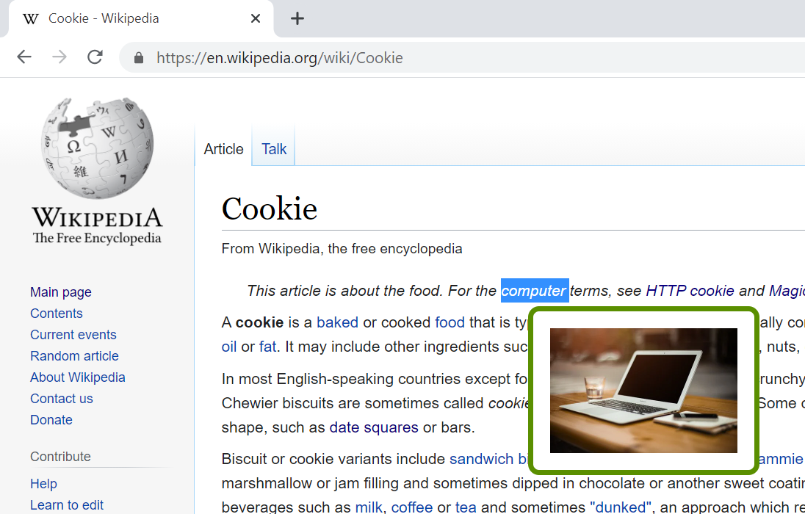
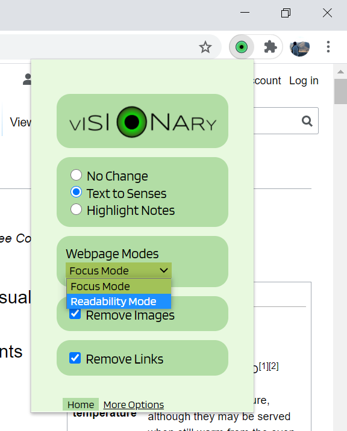

Projects | Hackathons
HealthAlert
HackUMass Hackathon | Grand Prize Winner |
HealthAlert is a health wearable and app tailored to the elderly, people with dangerous health conditions, and people who suffer from memory loss. Many of our grandparents or parents may live alone, and their safety is our first priority. As people get older, they are more susceptible to dangerous health conditions and memory loss. HealthAlert helps them take care of themselves in different environments, like hot or humid climates, and immediately alert close family members through SMS if the wearable detects alarming events, like a seizure or fall.
See the Github repository linked above (Github icon) or watch the video below to learn about HealthAlert's full capabilities.
I worked on creating and programming the physical device, sending/receiving data between the app and the Arduino through Bluetooth low energy, and training a model to classify between seizure-like tremors and normal movement.
Built using: Flutter, Arduino, TensorFlow Lite, Google Colab
Draw Your Way
HackGT Hackathon | Overall Best in Emerging Track |
Draw Your Way is a mobile and web app that allows users to use 2D objects and the drawing feature to guide friends and strangers alike through buildings, campuses, and cities. The app allows users to create a simple visual guide then share it by copying and sending a simple code, making it the perfect guiding aid.
I worked on the 2D visualization feature, which includes drag-and-drop functionality and parsing the icons' relative locations for the share code.
Built using: Flutter, Firestore, Photoshop
Trick-or-Treat Near Me!
Hack or Treat Hackathon |
Trick-or-Treat Near Me! is a web and mobile app that uses Google Map's geolocation APIs for users to find locations near them that are giving out candy and instructions for socially-distanced trick-or-treating. Using the app, families can see nearby locations that are giving out candy on a map. They can see locations that are offering peanut-free, gluten-free, etc. candy for children with allergies, as well as instructions for socially-distanced and safe ways to pick up candy. These locations and information are added by users, either those who are giving out the candy or people who passed by the location while trick-or-treating and want to share the location with others. The functionalities of the app are targeted towards helping families plan trick-or-treating routes so that their children can have the best experience.
I worked on UI design, navigation, and features for adding messages to locations.
Built using: Google Maps API, Firestore, Flutter
Visionary
TechTogether Boston Hackathon |
Visionary is a Chrome extension that can change the way you study and read articles. It is designed to help the elderly, dyslexic, and those who have difficulty focusing, but it can be used by anyone who wants to read articles efficiently. It can remove hyperlinks and images, as well as change the font, text size, and text spacing of the whole website. Using "Text to Senses" mode, if users highlight a certain word while using Visionary, they can instantly receive an image that represents the word and hear a pronunciation of it. Users can also highlight text and download a text file of their highlighted notes.
|  |  |
I worked on readability features (font size, spacing, hyperlinks, images, etc.), the highlight and download notes feature, and the text-to-image feature by retrieving and parsing data from Google's Custom Search API.
Built using: Chrome Extension API, Google Custom Search JSON API, and HTML, CSS, JavaScript, JQuery, Speak.js for text-to-speech.
Computer Science at MOT Charter HS
High School Senior Capstone Project |
For my senior capstone project, I created a responsive website from scratch, showcasing projects throughout 4-year CS curriculum in high school. I implemented a bright, simple UI and used Rellax, a vanilla JavaScript library, to create a parallax scrolling effect.

Built using: HTML, CSS, JavaScript, Rellax JS library for parallax scrolling